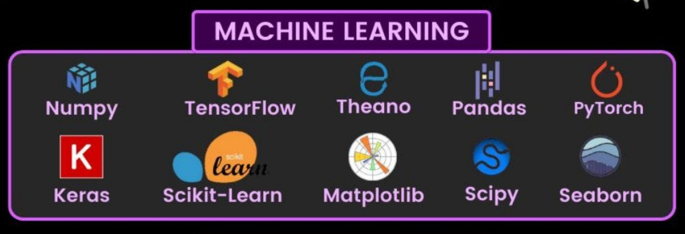
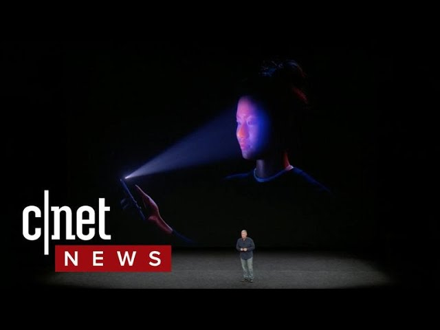

Keyboard shortcuts:
N/СпейсNext Slide
PPrevious Slide
OSlides Overview
ctrl+left clickZoom Element
If you want print version => add '
?print-pdf' at the end of slides URL (remove '#' fragment) and then print.
Like: https://wwwcourses.github.io/...CourseIntro.html?print-pdf
Created for
Created by
Въведение в курса
За мен
Ива Е. Попова
- Преподавателски опит:
- 5 години като асистент в Технически Университет, гр. София.
Курсове: "Програмни Езици", "Дискретна математика", "Експертни системи и Изкуствен Интелект".
- 7+ години към водещи частни учебни центрове.
Курсове: "Data Bases (MySQL)", "Front-End Development", "Python", "Machine Learning".
- Професионален опит:
- 7+ години като софтуерен инженер (4 от които като старши инженер и ръководител на екип) в международни IT компании (Comptel(<Nokia), Internet Securities, Datamax, Experian).
- 6+ години като изследовател и консултант в стартъп компания в областта на Изкуствения Интелект (Sentiment Analysis , Ontologies, NLP(+LLM)).
- Образование:
- Средно образование, НПГ по КТС - гр. Правец
- Маг. инж. по Компютърни Системи, Технически Университет, гр. София:
- Докторант по Системи с Изкуствен Интелект, Технически Университет, гр. София
Какво ще научите по време на курса?
Какво ще научите по време на курса.
Introduction to Machine Learning
- Ще се запознаем с основните понятия в Машинно Обучение.
- Ще разгледаме някои от основните Python библиотеки, които се използват в тази област и чрез практически примери ще придобиете представа как се обучават моделите. 
{kind=link}
Introduction to Neural Networks and Deep Learning
- Ще се запознаем с основите на Невронните Мрежи и Дълбокото Обучение.
- практически упражнения с TensorFlow и PyTorch.

Fundamentals of Generative AI
Fundamentals of Large Language Models (LLMs) and Text Generation
- В този модул ще разгледаме големите езикови модели като GPT и други. За целта ще се запознаем с основите на обработката на естествен език (NLP), какви са методите и техниките за обучение на GPT за генериране на текст.
- След като сме изяснили процесът на работа на LLMs, ще разгледаме техники за съставяне на ефективни промтовте (prompt engineering) и набиращите все по-голяма популярност RAG (Retrieval augmented generation) техники.
- Ще дискутираме проблемите: обяснимост и интерпретируемост на LLMs.
- Ще създадем персонализиран чат бот с помощта на опен сорс обучен модел от Hugging Face.
- Ще разгледаме детайлно процеса за фина настройка на модела с помощта на персонализирани данни за специфичен домейн.
- Ще разширим функционалността на чатбота чрез API и интеграцията му в мобилно приложение.
- В края на курса, ще имаме напълно функциониращ чат бот, който може да бъде използван в реални сценарии.
{kind=link}
Какво е "Машинно обучение" и какви са неговите приложения?
Какво е "Машинно обучение" и какви са неговите приложения?
- Машинното обучение (Machine Learning) е дисциплина, която се разглежда като под-направление и неразделна част от Изкуствения Интелект (Artificial Intelligence).
- Едни от първите алгоритми в областта са разработени още през 50-те години на 20ти век, но едва през последните 20 години популярността й започна главоломно да нараства. И ще продължава - с още по-високи темпове.
- Всички големи софтуерни, финансови и маркетинг компании използват Machine Learning техники и инвестират огромни средства в разработката на нови алгоритми и приложения.
- Все повече фирми и компании търсят специалисти в сферата на Machine learning. Доказателство за това са не само огромния брой незаети позиции в обявите за работа но и факта, че в България през април, 2022г. отвори врати световен център за изкуствен интелект (INSAIT), като в инвестицията за над 200 млн. лева участват Българското правителство, Google, DeepMind и Amazon и др.
AI и ML в България
- 1964 - Институт по техническа кибернетика
- Българска Академия на Науките
- 1978 - 1990 - Интитут по инженерна кибернетика и роботика
- Българска Академия на Науките
- 1983 - 1991 - проф. Людмил Даковски създава първата в България научноизследователска лаборатория по изкуствен интелект, а от 1988 г. и Международната школа „Експертни системи и изкуствен интелект“.
- Технически Университет - София
- От 1990та както Техническия Университет,Софийския Университет (ФМИ), НБУ и др. включват в магистърските си програми множество дисциплини, свързани с AI, ML и Роботика.
Бъдещето на Изкуствения Интелект в България (INSAIT - откриване)
- През 2022г. в България официално отвори врати Институтът за компютърни науки, изкуствен интелект и технологии ( INSAIT ).
Image Recognition and Classification

{kind=link}
Задавали ли сте си въпроса как вашият лаптоп/телефон разпознава точно вашето лице? Или как Google успяха за толкова кратко време да дигитализират огромно количество книги?

Учудвали ли сте се колко точно приложенията за разпознаване на растения работят?
Отговорът се крие в едно от направленията на Machine Learning: Image Recognition and Classification.
Recommendation Systems
- Machine Learning алгоритми се използват в множеството системи, които се опитват да "предскажат" цените на пазара на имоти, борсови акции, крипто-валути и пр. (Predictive Analytics).
- Приложения като YouTube, Netflix, Spotify и пр. бързо се "научават" да разпознават нашите вкусове и ни предлагат релевантни заглавия. От години компании като Amazon, Alibaba, Ebay използват Machine Learning алгоритми за да ни предложат неустоими оферти (Recommendation Systems).
Search Engines and Personal Assistants
- Всички забелязваме как с всеки изминал ден търсачката на Google става все по "умна".
- Персонализираните асистенти като Siri, Alexa, Google Assistant, чат ботове и пр. от години не изненадват никой. Но малцина знаят за технологията, която стои зад тях: Natural Language Processing.
Какво трябва да знаете преди да започнете курса
Какво трябва да знаете преди да започнете курса

- Преди да започнете курса, е препоръчително да имате следните предварителни знания и умения:
- Основи на програмирането с Python: Трябва да разбирате базови концепции в програмирането и да имате опит с писането на скриптове на Python.
- Линейна алгебра: Основни познания по линейна алгебра, включително матрици, вектори и операции с тях.
- Теория на вероятностите: Основни понятия и формули в теорията на вероятностите, включително разбиране на разпределения и вероятностни модели.
A Brief History of AI and ML
A Brief History of AI and ML
The beginning
- 1950 - The Turing Test
- 1956 - Dartmouth Conference: the birth of AI
- 1958 - F. Rosenblatt created the Perceptron algorithm
- 1959 - A.Samuel coined the term "machine learning"
- 1964 - Joseph Weizenbaum created ELIZA (the first chat bot)
- 1958 - 1972 - AI Optimism
- 1970 - 1973 - The WABOT-1 (the first fun-scale anthropomorphic robot developed in the world.)
- 1974 - 1980 - The first AI winter
- 1969 - 1986 - The dark age of connectionism
- 1986 - Ernst Dickmanns at Bundeswehr University Munich builds the first robot cars
- 1980-1987 - The Boom of Expert Systems
History - The Modern Times
- 1996 - "Deep Blue" became the first machine to win a chess game against a reigning world champion (Garry Kasparov)
- 2007 - Facebook started working on DeepFace
- 2009 - Google starts the self-driving car project
- 2011 - IBM's Watson computer defeated television game show Jeopardy! champions
- 2011 - 2014 - The boom of virtual assistants: sApple's Siri (2011), Google's Google Now(2012) and Microsoft's Cortana(2014)
- 2014 - Google aquares DeepMind
- 2015 - Elon Musk and other tech giants donated 1 billion dollars for Open AI
- 2016 - Google's AlphaGo program beat a human professional Go player for the first time
Miles vs. Watson: The Complete Man Against Machine Showdown
These slides are based on
customized version of
framework